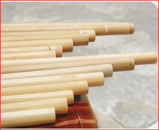
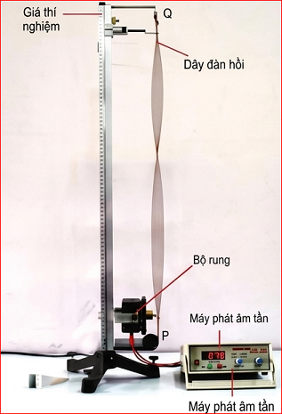
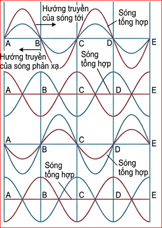
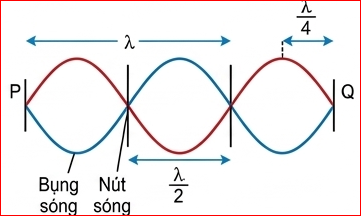
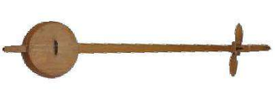
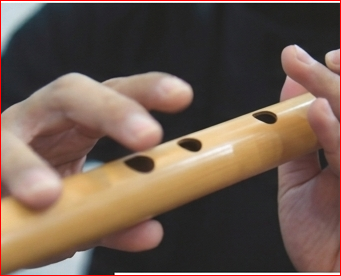
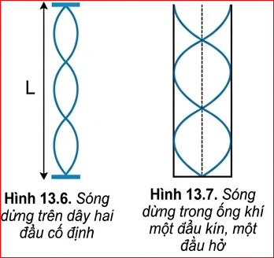

Khi vỗ tay đều trước miệng các ống của đàn K'lông pút có độ dài khác nhau như hình bên, thì thấy âm phát ra ở các miệng ống trầm bổng khác nhau. Sóng âm lan truyền trong mỗi ống không phải là sóng chạy. Vậy đó là loại sóng gì và có những đặc điểm nào?
Bố trí thí nghiệm như Hình 13.1

Hình 13.1. Bộ thí nghiệm tạo sóng dừng trên sợi dây
Câu hỏi
Từ kết quả thí nghiệm rút ra điều kiện để có sóng dừng.
Sóng dừng được tạo thành mỗi khi có hai sóng cùng biên độ, cùng bước sóng lan truyền theo hai hướng ngược nhau. Hai sóng này gặp nhau, giao thoa nhau tạo nên sóng tổng hợp là sóng dừng. Những điểm tại đó hai sóng ngược pha nhau thì không dao động và được gọi là nút sóng. Những điểm tại đó hai sóng đồng pha với nhau thì dao động với biên độ cực đại và được gọi là bụng sóng (Hình 13.2).
Trong thực tế ta thường gặp một trong hai sóng là sóng phản xạ của sóng kia. Sóng dừng là tổng hợp của nhiều sóng tới và sóng phản xạ.

Hình 13.2. Sóng tới và sóng phản xạ
Hãy xác định
Hãy xác định số nút và số bụng của sóng dừng trên sợi dây Hình 13.3.

Hình 13.3
Hãy giải thích
Hãy giải thích sự tạo thành sóng dừng trên dây PQ ở thí nghiệm Hình 13.1.
Điều kiện để có sóng dừng trên một sợi dây có hai đầu cố định là chiều dài của sợi dây phải bằng một số nguyên lần nửa bước sóng (Hình 13.3).
(Trong đó \(n\) là số bụng sóng, số nút sóng là \(n + 1\))
Việc các nhạc cụ phát ra các nốt nhạc cao thấp khác nhau thường phụ thuộc vào việc tạo ra các sóng dừng khác nhau.
Đối với các loại nhạc cụ dây như đàn ghita, violon, đàn tính, đàn bầu thì hai đầu dây đàn được giữ cố định. Khi ta gảy đàn, trên dây xuất hiện sóng dừng. Theo công thức (13.1), nó phát ra một âm có bước sóng \( \lambda = 2L \) hay có tần số \( f = \frac{v}{2L} \).

Hình 13.4. Đàn tính
Khi ấn ngón tay vào các phím khác nhau ta đã thay đổi chiều dài của dây đàn, do đó âm phát ra có độ cao, thấp khác nhau. Để khuếch đại âm, đàn ghita còn có một thùng đàn đóng vai trò hộp cộng hưởng.
Đối với các loại nhạc cụ khí như sáo, kèn, khi ta thổi, cột không khí dao động tạo ra sóng dừng. Bằng cách thay đổi lỗ không bị bịt ta thay đổi chiều dài cột không khí dao động. Do đó các nốt nhạc phát ra cũng bị thay đổi (Hình 13.5).

Hình 13.5. Sáo trúc
Câu hỏi
Tìm điều kiện để có sóng dừng trong cột không khí một đầu cố định, một đầu tự do (Hình 13.7).

Hình 13.7. Sóng dừng trong ống khí một đầu kín, một đầu hở
1. Một dây đàn hồi dài \( 0,6 \text{ m} \) hai đầu cố định dao động với một bụng sóng.
a) Tính bước sóng \( \lambda \) của sóng trên dây.
b) Nếu dây dao động với 3 bụng sóng thì bước sóng là bao nhiêu?
a) Vì dây có 2 đầu cố định dao động với 1 bụng sóng (\( n = 1 \)), áp dụng công thức: \( L = n \frac{\lambda}{2} \Rightarrow 0,6 = 1 \cdot \frac{\lambda}{2} \Rightarrow \lambda = 1,2 \text{ m} \).
b) Nếu dây dao động với 3 bụng sóng (\( n = 3 \)), ta có: \( L = 3 \frac{\lambda'}{2} \Rightarrow 0,6 = 3 \cdot \frac{\lambda'}{2} \Rightarrow \lambda' = 0,4 \text{ m} \).
2. Trên sợi dây đàn hồi, có chiều dài \( L = 1,2 \text{ m} \) người ta tạo ra sóng dừng có hình dạng được mô tả ở Hình 13.6. Biết tần số rung của sợi dây là \( f = 13,3 \text{ Hz} \). Xác định tốc độ truyền sóng trên dây.
Từ hình 13.6 (giả sử có 3 bụng sóng, \( n = 3 \)), ta có điều kiện sóng dừng 2 đầu cố định:
\( L = n \frac{\lambda}{2} \Rightarrow 1,2 = 3 \frac{\lambda}{2} \Rightarrow \lambda = 0,8 \text{ m} \).
Tốc độ truyền sóng trên dây: \( v = \lambda \cdot f = 0,8 \cdot 13,3 = 10,64 \text{ m/s} \).
*Lưu ý: Số bụng n lấy theo hình vẽ thực tế trong SGK.
Giải thích được sự hình thành sóng dừng trong thực tế. Ví dụ trong ống sáo, đàn K'lông pút.
Bài 1: Sóng dừng trên dây đàn
Một sợi dây đàn dài \( L = 1 \text{ m} \) căng ngang, hai đầu cố định. Vận tốc truyền sóng trên dây là \( v = 20 \text{ m/s} \). Kích thích cho dây dao động với tần số \( f = 50 \text{ Hz} \). Tính số bụng sóng và số nút sóng quan sát được trên dây.
Bước 1: Tính bước sóng \( \lambda \)
\( \lambda = \frac{v}{f} = \frac{20}{50} = 0,4 \text{ m} \)
Bước 2: Áp dụng điều kiện sóng dừng 2 đầu cố định
\( L = n \frac{\lambda}{2} \Rightarrow 1 = n \frac{0,4}{2} \Rightarrow 1 = 0,2 \cdot n \Rightarrow n = 5 \)
Kết luận:
Bài 2: Tần số âm cơ bản của ống sáo
Một ống sáo có chiều dài \( 0,6 \text{ m} \) (coi như một đầu kín, một đầu hở). Biết tốc độ truyền âm trong không khí là \( 340 \text{ m/s} \). Hãy tính tần số âm cơ bản (tần số nhỏ nhất) mà ống sáo phát ra được.
Điều kiện sóng dừng trong ống 1 đầu kín 1 đầu hở: \( L = (2n + 1)\frac{\lambda}{4} \)
Tần số âm cơ bản ứng với âm thấp nhất, tức là \( n = 0 \).
Khi đó: \( L = \frac{\lambda}{4} \Rightarrow \lambda = 4L = 4 \cdot 0,6 = 2,4 \text{ m} \).
Tần số âm cơ bản là: \( f = \frac{v}{\lambda} = \frac{340}{2,4} \approx 141,67 \text{ Hz} \).
Bài 3: Tìm bước sóng qua số nút
Trên một sợi dây dài \( L = 2 \text{ m} \), hai đầu cố định đang có sóng dừng. Người ta đếm được có tất cả 5 nút sóng (kể cả 2 đầu dây). Tính bước sóng của sóng truyền trên dây.
Dây có 2 đầu cố định, số nút sóng là \( N_n = n + 1 \).
Đề cho có 5 nút sóng nên: \( n + 1 = 5 \Rightarrow n = 4 \) (có 4 bụng sóng).
Áp dụng công thức: \( L = n \frac{\lambda}{2} \)
\( \Rightarrow 2 = 4 \cdot \frac{\lambda}{2} \Rightarrow 2 = 2\lambda \Rightarrow \lambda = 1 \text{ m} \).
Vậy bước sóng là \( 1 \text{ m} \).